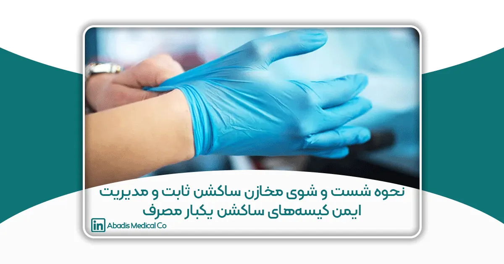
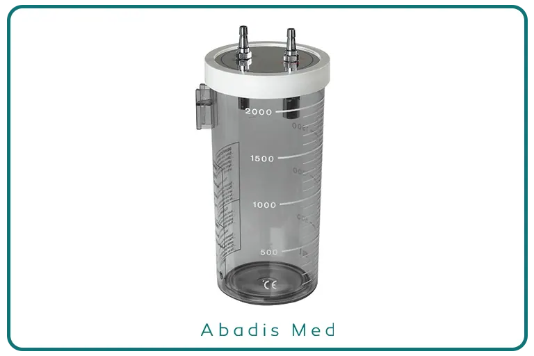
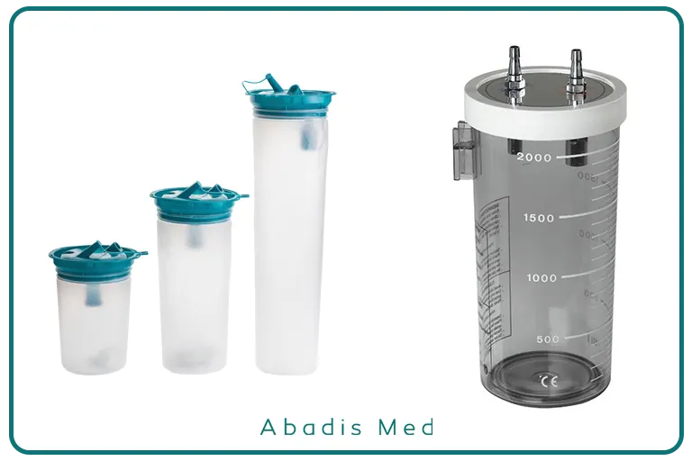

راهنمای علمی، عملی و مدیریتی بر مبنای استانداردهای WHO و CDC
مقدمه
در دهههای اخیر، افزایش مقاومت میکروبی، گسترش بیماریهای عفونی و الزامات روزافزون ایمنی بیمار، بیمارستانها و مراکز درمانی را با چالشهای جدی مواجه کرده است. بر اساس گزارش سازمان جهانی بهداشت (WHO)، عفونتهای مرتبط با مراقبتهای بهداشتی (Healthcare-Associated Infections, HAIs) سالانه میلیونها بیمار را در سراسر جهان درگیر میکنند و یکی از منابع بالقوه این آلودگیها، تجهیزات پزشکی است که بهطور مستقیم با ترشحات و مایعات بدن بیمار در تماس هستند.
یکی از مهمترین این تجهیزات، دستگاههای ساکشن است که برای جمعآوری خون، ترشحات تنفسی، مایعات جراحی و سایر مواد آلوده بهکار میرود. در صورت عدم مدیریت صحیح، این دستگاهها میتوانند منبع انتقال عفونتهایی مانند هپاتیت B و C، HIV، MRSA، و باکتریهای مقاوم چندگانه باشند.
به طور کلی، دستگاههای ساکشن بیمارستانی در دو گروه اصلی قرار میگیرند:
1. مخازن ساکشن ثابت (قابل شستوشو)
2. کیسههای ساکشن یکبار مصرف (Disposable suction liner bags)
این مقاله با رویکردی تحلیلی و بر پایه استانداردهای بینالمللی از جمله WHO، CDC و AAMI، به بررسی علمی و کاربردی هر دو سیستم پرداخته، سپس برتریهای سیستم مدرن یعنی کیسه های ساکشن یکبار مصرف را در مقایسه با سیستم سنتی نشان میدهد.
بخش اول: شستوشو و ضدعفونی مخازن ساکشن ثابت
۱-۱. ویژگیهای ساختاری
مخازن ساکشن ثابت عموماً از پلیکربنات یا پلیپروپیلن ساخته میشوند که قابلیت مقاومت در برابر حرارت و مواد شیمیایی را دارند. این مخازن بخشی از سیستم مرکزی مکش بیمارستانی هستند و پس از هر بار استفاده باید کاملاً شسته، ضدعفونی و خشک شوند.
۱-۲. مراحل استاندارد شستوشو (طبق WHO و CDC)
1. ایمنی فردی (PPE): استفاده از دستکش مقاوم، ماسک N95 یا جراحی، عینک ایمنی و گان ضد آب. تهویه فعال محل شستوشو و شستوشوی دستها قبل و بعد از فرآیند الزامی است.
2. تخلیه محتویات: تخلیه ترشحات در ظروف زباله بیولوژیک یا سیستم دفع فاضلاب بیمارستان. در موارد بیماریهای پرخطر، استفاده از ظروف ویژه و برچسبگذاری ضروری است.
3. پاکسازی مکانیکی: استفاده از برسهای مخصوص برای داخل مخزن همراه با آب گرم (۴۵ تا ۶۰ درجه) و مواد شوینده آنزیمی.
4. ضدعفونی سطح بالا: استفاده از هیپوکلریت سدیم ۰/۵٪ (حداقل ۱۰ دقیقه)، یا گلوتارآلدئید ۲٪ و پراستیک اسید طبق دستورالعمل شرکت سازنده.
5. آبکشی: با آب استریل یا مقطر جهت حذف باقیمانده مواد شیمیایی. در برخی موارد استفاده از اتوکلاو توصیه میشود.
6. خشکسازی و نگهداری: خشکسازی با هوای آزاد یا دستمال استریل و نگهداری در کابینتهای بسته. ثبت تاریخ، زمان و نام مسئول شستوشو در فرم پیگیری ضروری است.
۱-۳. چالشها و خطاهای شایع
• استفاده بیش از حد از هیپوکلریت باعث خوردگی تجهیزات میشود.
• خشکسازی ناقص منجر به رشد قارچ و باکتری میگردد.
• مخازن ترکخورده یا تغییر رنگداده نباید دوباره استفاده شوند.
• خطاهای انسانی در مراحل شستوشو یکی از دلایل اصلی باقیماندن آلودگی است.
بر اساس مطالعات CDC، حتی در شرایط رعایت دقیق پروتکلها، درصدی از مخازن پس از شستوشو همچنان آلوده باقی میمانند. این موضوع اهمیت بازاندیشی در روشهای سنتی را آشکار میکند.

بخش دوم: کیسههای یکبار مصرف ساکشن – ساختار، مزایا و مدیریت ایمن
۲-۱. ساختار و عملکرد
کیسههای ساکشن یکبار مصرف درون مخزن قرار گرفته و پس از پایان کار، بدون نیاز به باز شدن یا تماس مستقیم، جمعآوری و دفع میشوند.
۲-۲. مزایای استفاده از کیسههای یکبار مصرف
کنترل عفونت: حذف کامل فرآیند شستوشو و کاهش خطر تماس پرسنل با مایعات آلوده.
سرعت عمل: امکان تعویض سریع در شرایط اورژانسی مانند اتاق عمل یا ICU.
صرفهجویی در منابع: کاهش مصرف آب، مواد ضدعفونیکننده و زمان پرسنل.
ایمنی پرسنل: کاهش خطر پاشش ترشحات، بریدگی یا استنشاق آئروسلهای آلوده.
پایداری فرایند: عملکرد یکنواخت و قابل پیشبینی در همه شرایط.
۲-3. دفع ایمن
-
-
بسته شدن کامل درپوش بلافاصله پس از استفاده.
-
قرار دادن در کیسه زباله قرمز و دفع طبق مقررات پسماند بیولوژیک.
-

بخش سوم: مقایسه تخصصی دو سیستم
|
شاخص عملکردی |
مخازن ساکشن ثابت |
کیسههای ساکشن یکبار مصرف |
|
ایمنی زیستی |
وابسته به رعایت دقیق شست و شو، خطر باقی ماندن میکروب وجود دارد | بسیار ایمن، تماس مستقیم با مایعات صفر |
|
بار کاری پرسنل |
زیاد( شامل شست و شو، ضدعفونی، خشک سازی) |
بسیار کم |
| سرعت عملیاتی | کند | بسیار سریع |
|
هزینه عملیاتی |
بیشتر (آب، مواد و زمان) |
ندارد( فاقد نیاز به شست و شو) |
|
نیاز به آموزش |
بالا ( پرسنل باید شست و شو و ضدعفونی استاندارد را بلد باشند) |
پایین (استفاده ساده و سریع) |
|
کنترل عفونت |
متغیر و پر ریسک | پایدار و استاندارد |
|
پایداری محیطی |
پسماند کمتر ( در صورت رعایت شست و شو) پساب بیشتر |
پسماند بیشتر( برخی قابل بازیافت) فاقد پساب |
|
مناسب برای بخش های بحرانی |
نسبتا محدود |
ایده آل برای ICU,CCU, اورژانس |

بخش چهارم: تحلیل علمی و عملی برتری سیستم مدرن (کیسههای یکبار مصرف)
در این بخش، بر اساس دادههای WHO، CDC و مطالعات بالینی اخیر، مزایا و برتریهای کیسههای ساکشن یکبار مصرف در مقایسه با سیستم سنتی مورد بررسی قرار میگیرد:
-
ایمنی بیمار و پرسنل
-
حذف کامل فرآیند شستوشوی دستی باعث کاهش تماس مستقیم با ترشحات و کاهش ریسک انتقال عوامل بیماریزا میشود.
-
مطالعات نشان دادهاند که استفاده از کیسههای یکبار مصرف میتواند HAIs را تا ۳۰–۴۰٪ کاهش دهد، به ویژه در بخشهای حساس مانند ICU و اتاق عمل.
-
-
کاهش خطای انسانی و افزایش استانداردسازی
-
در سیستم مخازن ثابت، کیفیت ضدعفونی وابسته به دقت پرسنل و رعایت زمان تماس و غلظت مواد است.
-
کیسههای یکبار مصرف استانداردشده و یکپارچه عمل میکنند و خطای انسانی را تقریباً به صفر میرسانند.
-
-
بهینهسازی زمان و منابع انسانی
-
زمان آمادهسازی و تعویض کیسههای یکبار مصرف کمتر از ۵ دقیقه است، در حالی که شستوشوی کامل مخازن ثابت میتواند بیش از ۳۰ دقیقه طول بکشد.
-
کاهش بار کاری پرسنل باعث افزایش بهرهوری و امکان اختصاص نیرو به مراقبت مستقیم بیماران میشود.
-
-
سازگاری با محیطهای بحرانی و مدیریت بحران
-
در شرایط اپیدمی، اورژانس و بخشهای پرخطر، امکان تعویض سریع و ایمن کیسهها به کاهش انتقال بیماری کمک میکند.
-
سیستم کیسههای یکبار مصرف امکان پاسخدهی سریع در مواقع کمبود نیروی انسانی یا افزایش حجم بیماران را فراهم میکند.
-
-
پایداری و مدیریت محیطی
-
اگرچه تولید پسماند پلاستیکی بالاتر است، اما استفاده از کیسههای قابل بازیافت یا بیودگرادبل اثر محیطی را کاهش میدهد.
-
عدم نیاز به آب و مواد شیمیایی باعث صرفهجویی در منابع طبیعی و کاهش پساب میشود.
-
نتیجهگیری تحلیل:
با توجه به شاخصهای ایمنی، کنترل عفونت، زمان عملیاتی، بار کاری پرسنل، و بهرهوری اقتصادی، سیستم مدرن کیسههای یکبار مصرف ساکشن برتر از مخازن ثابت قابل شستوشو است و میتواند به عنوان استاندارد جدید در مراکز درمانی به کار گرفته شود.
نتیجهگیری نهایی
با توجه به شواهد علمی و تجارب بالینی، بهوضوح مشخص است که سیستم مدرن کیسههای ساکشن یکبار مصرف از نظر ایمنی، کارایی، کنترل عفونت و مدیریت منابع انسانی بر سیستم سنتی مخازن ثابت برتری دارد.
مخازن ثابت، نیازمند فرآیندهای پیچیده شستوشو و ضدعفونی هستند که به مصرف آب، مواد شیمیایی، نیروی انسانی و زمان منجر میشود. همچنین ریسک بالای خطای انسانی و باقیماندن آلودگی پس از شستوشو، تهدیدی جدی برای ایمنی بیماران و پرسنل محسوب میشود.
در مقابل، کیسههای یکبار مصرف با حذف کامل مرحله شستوشو، احتمال تماس مستقیم با ترشحات را به صفر نزدیک میکنند. این ویژگی نه تنها موجب کاهش عفونتهای بیمارستانی میشود، بلکه بهرهوری نیروی انسانی را نیز افزایش میدهد.
بنابراین، سیاستگذاری هوشمندانه در مراکز درمانی باید به سمت استفاده گستردهتر از کیسههای ساکشن یکبار مصرف حرکت کند. این انتخاب نه تنها منجر به ارتقای سطح کنترل عفونت میشود، بلکه تضمینکننده ایمنی بیماران، پرسنل و کل سیستم سلامت خواهد بود
منابع علمی
- WHO. Decontamination and Reprocessing of Medical Devices for Health-care Facilities. Geneva, 2016.
- CDC. Guideline for Disinfection and Sterilization in Healthcare Facilities. 2008.
- AAMI. Comprehensive Guide to Medical Device Cleaning. 2021.
- Rutala WA, Weber DJ. Principles of Disinfection, Sterilization, and Antisepsis. 2019.
- Infection Control Today. Disposable Suction Liners and Infection Prevention, 2020.
- European Centre for Disease Prevention and Control (ECDC). Infection Control Measures in Healthcare Settings, 2021.